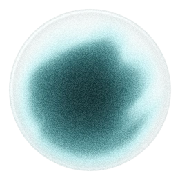

The homepage's sources section as it is built in Webflow. Alice listens as the light leaves the three sources, takes each one in as its light arrives, reads them, and lights up as the light leaves her for the three steps; a round every 6 seconds, in step with the lines. Scroll the section out of view and back to see it pause and wait for the next round. "Still" shows the page without the script: the image the orb fades in over.
Your documents, legal sources and firm knowledge in one place.
